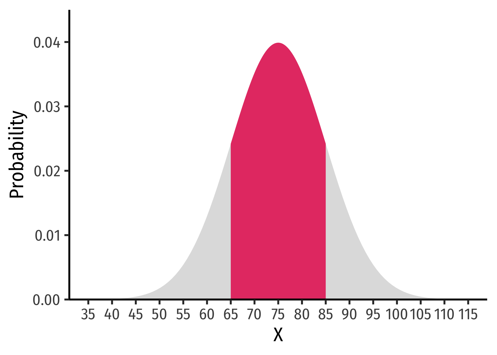

# store as a named function, I'll call it "my_function"
my_function <- function(x){10*x - x^2}
# look at it
my_functionfunction(x){10*x - x^2}There are several useful mathematical properties of expected value and variance.
Property 1: the expected value of a constant is itself, and the variance of a constant is 0.
\[\begin{align*} E(c)&=c\\ var(c)&=0\\ sd(c)&=0\\ \end{align*}\]
For any constant, \(c\)
Property 2: adding or subtracting a constant to a random variable and then taking the mean or variance:
\[\begin{align*} E(X \pm c)&=E(X) \pm c\\ var(X \pm c)&=X\\ sd(X \pm c)&=X\\ \end{align*}\]
For any constant, \(c\)
Property 3: multiplying a constant to a random variable and then taking the mean or variance:
\[\begin{align*} E(aX)&=E(X) aE(X)\\ var(aX)&=a^2var(X)\\ sd(aX)&=|a|sd(X)\\ \end{align*}\]
For any constant, \(a\)
Property 4: the expected value of the sum of two random variables is equal to the sum of each random variable’s expected value:
\[E(X \pm Y)=E(X) \pm E(Y)\]
You can create custom mathematical functions using mosaic by defining an R function() with multiple arguments. As a simple example, make the function \(f(x) = 10x-x^2\) (with one argument, \(x\) since it is a univariate function) as follows:
# store as a named function, I'll call it "my_function"
my_function <- function(x){10*x - x^2}
# look at it
my_functionfunction(x){10*x - x^2}There are some notational requirements from R for making functions. Any coefficient in front of a variable (such as the 10 in 10x must be explicitly multiplied by the variable, as in 10*x).
To use the function to calculate its value at a particular value of x, simply define what the (x) is and run your named function on it:
In ggplot there is a dedicated stat_function() (equivalent to a geom_ layer) to graph mathematical and statistical functions. All that is needed is a data.frame of a range of x values to act as the source for data, and set x equal to those values for aesthetics.
Then we add the stat_function, where fun = is the most important argument where you define the to function to graph as your function created above, for example, our my_function.
You can also adjust things like size, color, and line type.
ggplot(data = tibble(x = 1:10))+
aes(x = x)+
stat_function(fun = my_function,
color = "blue",
size = 2,
linetype = "dashed") There are some standard statistical distributions built into R. They require a combination of a specific prefix and a distribution.
Prefixes:
| Action/Type | Prefix |
|---|---|
| random draw | r |
| density (pdf) | d |
| cumulative density (cdf) | p |
| quantile (inverse cdf) | q |
Distributions:
| Distribution | Name in R |
|---|---|
| Normal | norm |
| Uniform | unif |
| Student’s t | t |
| Binomial | binom |
| Negative binomial | nbinom |
| Hypergeometric | hyper |
| Weibull | weibull |
| Beta | beta |
| Gamma | gamma |
Thus, what you want is a combination of the prefix and the distribution.
rnorm(n = 10, # take 10 draws from a normal distribution with:
mean = 2, # mean of 2
sd = 1) # sd of 1 [1] 3.4582468 2.0740456 0.9092114 1.1790483 2.1474758 3.0726526 3.6894126
[8] 3.0430861 1.9429537 0.5569242# find probability of area to the LEFT of a number on pdf (note this = cdf of that number!)
pnorm(q = 80, # number is 80 from a distribution where:
mean = 200, # mean is 100
sd = 100, # sd is 100
lower.tail = TRUE) # looking to the LEFT in lower tail[1] 0.1150697You can also graph these commonly used statistical functions by setting fun = the named functions in your stat_function() layer. If you want to specify the mean and standard deviation, use args = list() to include the required arguments from the named function above (e.g. dnorm needs mean and sd).
ggplot(data = tibble(x = -400:600))+
aes(x = x)+
stat_function(fun = dnorm,
args = list(mean = 200, sd = 200),
color = "blue",
size = 2,
linetype = "dashed") If you don’t include this, it will graph the standard distribution:
ggplot(data = tibble(x = -4:4))+
aes(x = x)+
stat_function(fun = dnorm,
color = "blue",
size = 2,
linetype = "dashed") To add shading under a distribution, simply add a duplicate of the stat_function() layer, but add geom="area" to indicate the area beneath the function should be filled, and you can limit the domain of the fill with xlim=c(start,end), where start and end are the x-values for the endpoints of the fill.
# graph normal distribution and shade area between -2 and 2
ggplot(data = tibble(x = -4:4))+
aes(x = x)+
# graph the curve
stat_function(fun = dnorm,
color = "blue",
size = 2,
linetype = "dashed")+
# shade area under curve (between -2 and 2)
stat_function(fun = dnorm,
xlim = c(-2,2),
geom = "area",
fill = "green",
alpha = 0.5)Hence, here is one graph from my slides:
ggplot(data = tibble(x=35:115))+
aes(x = x)+
stat_function(fun = dnorm,
args = list(mean = 75, sd = 10),
geom = "area",
size = 2,
fill = "gray",
alpha = 0.5)+
stat_function(fun = dnorm,
args = list(mean = 75, sd = 10),
geom = "area",
xlim = c(65,85),
fill = "#e64173")+
labs(x = "X",
y = "Probability")+
scale_x_continuous(breaks = seq(35,115,5))+
scale_y_continuous(limits = c(0,0.045),
expand = c(0,0))+
theme_classic(base_family = "Fira Sans Condensed",
base_size = 20)